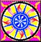

| Linwë and the ring Varnya by Artemia An MST |
||||||
| Disclaimers: Celebrimbor and Curufin belong to Tolkien. I hope they will forgive me for the unflattering qualities I ascribed to them for the purposes of this MST. The Sue-fic being MSTd can be found here, and belongs to its author. http://www.fanfiction.net/read.php?storyid=1676470 *** In the darkness of a small home theater, lost somewhere on the curious border of real, unreal, and surreal, where PPC Headquarters, Middle-earth, and our Earth come together, a woman named Hellga was staring at the screen, wondering what will appear on it when she finally musters the strength to push the "Play" button. She was not even supposed to be here, but Agent Lambda locked inside her office and refused to come out for any reason, up to and including chemical fire in the HQ building. So it came to be that Hellga was dragged to watch this "movie" instead... She pushed the button, and let loose all the anger at being dragged out of her bed in the middle of the night to watch a Sue take over Middle-earth. Linwë and the ring Varnya by Artemia Hellga: Does Varnya sound Sanskrit, or is it just me? Everyone else: Huh? Ok for those who want more info on Eregion and the story line of this fanfic or you just can’t wait to understand more read below. Hellga: Some of us are just feeling masochistic and want to subject themselves to as much of your writings as possible. For those who want to know nothing and just discover it as you read then click the chapter button and enjoy. Celebrimbor, very distressed: Your death will be much quick and far less painful then. Hellga, my father got angry at me for spilling his purified mithril powder and sent me to watch it with you. Hellga: My poor Elf! *stifles the urge to hug him and gives him a glass of Bleepka* Keep it close. It is not miruvor, but it helps too. I wrote this in reply to a review and I sent it to the reviewer but also decided to post it here since some of the questions others may be asking also. If you have a question don’t hesitate to ask. Just put it in a review or email me straight. Enjoy all and I hope this clears it up for a few others. Hellga: By looks of it, it will confuse more than a few others. Ok chapter one was set in the second age. In the year 750 of the second age the elven kingdom of Eregion was founded in the west of Middle-earth by Celebrimbor and helped founded by Celeborn and Galadriel before they moved on to Lorien. Celebrimbor, confused: Kingdom? And who was the King? Hellga: Apparently, you. I always told you your father is crueler than you think. *Celebrimbor sighs and looks at the floor.* This kingdom was famed for its smithwork and the friendship of its people with the Dwarves of nearby Khazad-dum (later to be re-named Moria). In the year 1200 Sauron came to the Elves of Eregion, disguised as a good person named Annata. Celebrimbor: There was somewhere a good person named Annata? Hellga: Look, look, it’s a mini-Balrog! That explains why he is a good person! Celebrimbor: So THAT’s what they look like… Against the council of Gil-galad and Elrond the Elves of Eregion let him take shelter in their kingdom and here he taught them how to create the rings of power. Celebrimbor: It was a mutual learning process! Hellga, venomously: Are you trying to say YOU taught Sauron how to make The One Ring? Celebrimbor: Meep. *hides under the chair* Hellga: Get back into that seat. I was joking. *Celebrimbor obeys, but his ears twitch nervously, reminding Hellga of a big cat* In the year 1500 the elves of Eregion began to make the Elven Rings, they were completed in 1590. In 1600 Sauron forges the One Ring in Orodruin and reveals his true purpose to the elves for as soon as he placed his ring on his finger they were alerted and took off their own rings. Celebrimbor, almost panting: Not THEY. ME. I had all the rings back then. Hellga, soothingly: Here, here, we know you did. She is a nasty Sue. Just look at this tense shift! *pressess the glass of Bleepka against his lips until he drinks some and calms down* Just look how she tortures the innocent Common Comma! Sauron did not know they had created their own secret rings and angered he massed up an army and in 1697 Eregion was destroyed by Sauron's forces and Celebrimbor was slain. Celebrimbor: An arrow in your eye actually feels better than this fic! *Hellga gulps Bleepka, hoping it helps to stifle strong urges to hug suffering Elves* That same year Rivendell was founded and Elrond and Gil-galad led an elven army to help defend Eregion but they were too late and they could only help the survivors. Curufin, from the door: Ha, Gil-galad just sent Elrond. He wouldn’t help a Fëanorean. He just pretends to be a nice noble King. They are all usurpers and know that. Celebrimbor: *hides under the seat* Curufin: Where is my son? Hellga, innocently: I swear by the name of The One that he is watching it. I always knew you were an inhumane father. Curufin: I AM not human, why should I be humane? Celebrimbor: *get up and weakly waves at his father* I am here, atarinya. *Curufin leaves, satisfied with the progress.* The elves of Eregion had sent messengers to the Durin's folk just before the attack of Eregion because as Celebrimbor and the dwarves had been good friends he gave them one of the dwarf rings earlier, so Sauron then only recovered 15 rings. Celebrimbor: I wish I did, but Sauron was quicker. And he could feel all the Rings he helped make anyway. Hellga: He helped in making the Dwarven rings? Celebrimbor: And who do you think made those gaudy rocks? I would never fall that low! Curufin, listening behind the door: That’s my boy! Questions to first chapter by reviewers: Q. Why does her mother share the title of Calanelen? A. Well officially it is not in her title but she is called that by the Eregion elves because it is a nickname of her real title, which you will find out later. Calanelen is the name of the Elven royal family of Eregion not a last name but kinda close. Celebrimbor: What royal family? We were a guild of jewel-smiths, not a kingdom! And what kind of name is Calanelen anyway? Hellga: Not only it feels like a mouthful, it is something like Green Star, mixing and mutilating Sindarin and Quenya. Or maybe Star of Light – as if you have seen Star of Darkness – in tortured Quenya. Celebrimbor: It hurts my ears. Hellga, dreamily: Nice, pointy ears… *Celebrimbor looks at her in horror and jerks away from her hand* Celebrimbor: Hellga? Are you mad? *Hellga has succumbed to her desire to comfort a suffering Noldor and tries to hug him* Curufin, almost (but not quite) murderous: HE-ELGA! Hellga, snapping back to reality: Huh? *remembers what she almost did and blushes, burying her face in her hands* I am sorry I almost caved in. It is not easy, sitting next to a handsome AND unattached Noldo of the House of Finwë for such a long time... *Celebrimbor moves one seat away from her.* Hellga: I promise I won’t do that anymore. *gives herself an Anti-Lustin injection* *The merciless VCR continues to play the story of Linwë* Q. Sauron only had one name. Got that? One. A. Well actually Sauron was known under many names it would have been to obvious if he turned up to the elves calling himself Sauron. More to his name later. Hellga, sarcastically: Can’t wait to hear it. Celebrimbor, confused: Of course he had many names - Gorthaur, for example... Hellga: Tyelpinquar, you are looking for logic where none has ever been found. *Her use of his Quenya name reminds him of his father, so he sits up instantly and returns his attention to the words on the screen* Q. Why is her mother named Nienna? That'd be like name your kid...um, Jesus Christ or God or something. In other-words, elves weren't named after the Valar. A. That was actually a typo her name is supposed to be Niennasúrion. Hellga: Since then do Elves give girls masculine names? Celebrimbor: We don’t. Especially not masculine names that are based on a Vala’s name, are constructed incorrectly, and have silly meaning of something like “Sorrowful Wind-son” Q. Considering Linwë seems like an elf, I may point out those elves did not marry Dwarves. They hated each other, for goodness sakes! A. Lol well I don't know about you but my father often used to tease me when I was young about how a certain boy (who I would find disgusting and my father knew it) liked me. Its like that Linwë would never date and dwarf it would be so frowned upon it wouldn't be funny but her father likes to suggest it because it always makes Linwë pull faces. Its called teasing. And about the dwarves hating the elves and vis-versa. At that time they didn't, they were actually really really really good friends, the elves of Eregion where the ones who built the door in which the fellowship entered in the third age, "Speak friend and enter". They were friends, very close ones. Hellga: Permit me to present the winner of this week’s Most Atrocious Spelling and Grammar Competition. Celebrimbor, deep in thought: Friends, yes. But not to THAT extent. Hellga: What? Celebrimbor: I mean, we didn’t intermarry with Dwarves. It’s not just aesthetic reasons… Hellga, interrupting: It’s anatomy and physiology, right? *Celebrimbor blushes* *Hellga thinks about asking why and decides she would rather not know* Q. 14 in human years? My friends, elves are not dogs or cats. Their age is not counted in "human years". A. That part with the human years was for the readers. Linwë hasn't even met a human before much less no how long one of their years went for. Linwë is 14 in human years but really she only looks about 8 years old because she is an elf and ages slower. Celebrimbor: First of all, a 14-year old Elf child is more like 5 year old human child… Curufin: Except smarter and prettier. I decided to join you for a while. *Curufin sits down between Hellga and Celebrimbor, ignoring Hellga's disappointed face* Q. Who are these people? A. You'll just have to wait and see. Hellga: Have to? Oh, really? I really hope I haven't given anything to much away and well I guess your just going to have to wait and see for the rest of the story. Hellga: You have given away that your story is going to be utter crap, and I don’t need to see the rest of the story to determine that. Artemia: Hi all. Linwë * waves* Artemia: Well obviously I can not own anything of Tolkiens work however I do on Linwë, her mother, her father and anything basically else that doesn’t make sense lol. *looks at Linwë oops.* Hellga, Celebrimbor, and Curufin, together: Yes, you don’t make sense. And that is NOT funny. Linwë: * glares at Artemia* hey I make sense! Curufin: Then why do you have masculine name, O Sense-making One? Artemia: hmm umm yeah yeah you do. Linwë: *glares again* Artemia: Anywho this is a fic that will become more lord of the ringsish after we establish exactly what happened to the Eregion’s which by the way are actual Tolkien creations and you will find them and the distruction of them in various of Tolkien’s works. Now where was I? Oh yeah anyway so I’m just gonna have to explain about Linwë’s life for a little while until she can join the fellowship. Any questions? *looks at readers who just want her to shut up* Ok then… *creeps out.* Linwë: *waves* bye bye! Celebrimbor: Oh yes, that is destroying me all right. Hellga: You really shouldn’t watch it, dear. Your rhetorical skills deteriorate before my eyes. Curufin, slightly softened by seeing what he subjected his only child to: Yes, you deserve a break. *Hellga brings in a large tray loaded with Bleepka and chips, and the three of them relax for a few minutes in blissful silence. Then shrill siren sounds and the story continues* Linwë Calaelen sat in a tall tree dangling from one of its branches. Hellga: on the end of a long rope. The branch swayed in the wind as she crept closer and closer to the window. Curufin: So she fell down and broke her neck. Hearing the voices of her father and grandfather she stopped to listen. Celebrimbor: Her father caught her eavesdropping and sent her on a dangerous quest to Mordor. They were discussing the fate of the elves and all of middle-earth as they talked of ‘the one ring’ created by the traitor Hellga: Mary Sue to take away the free will and brains of all males in Middle-earth Annata, better known as Sauron. Hellga: Also fell victim to its power, and took the Sue to his tower of Barad-Dur to court her with bouquets of Mordor's most beautiful flowers. Fortunately, those flowers had long and sharp thorns, so when Sue slipped on her own drool and fell down, one of the torns went through her heart, instantly killing her… Linwë’s grandfather, against the council of Elrond and Gil-galad had taken in Sauron in the disguise of Annata and with him they had made the Rings of Power. Curufin, to his son: So you weren’t the only one making them? And you told me that was your very special talent! Celebrimbor: We started making Rings without him. You taught me yourself to never turn away skilled help, regardless of how I felt about them personally. I just did what you told me. *Curufin grinds his teeth* The elves had created rings in secret, which had enabled them to learn of the true nature of Hellga: Linwë and feed her to the fish, who got Sue-poisoning and mutated into the Watcher in the Water.. Sauron and in doing so had created wrath Curufin: Even I can’t create wrath. Hellga: But you are very good at inspiring it. *Curufin elbows her in the ribs* Hellga, very quietly: I always knew that Elf had mean temper… they would never live to see again. Celebrimbor: Oh yes, there have been no more such Sues. Linwë’s father and grandfather talked of how one of the rings created for the dwarves by Sauron and the Mirdain, the jewellers of Linwë’s kingdom, Celebrimbor, pale, clutching his chest: She enslaved my friends and took them to her kingdom! had already been given by Linwë’s grandfather to the King of Khazad-dûm, Durin the Third. Hellga: Hoping that would lure Linwë into Moria where a Balrog can finally have a nutritious meal. It was decided by Linwë’s grandfather and father to send Linwë’s mother Niennasúrion Calaelen to Khazad-dûm to warn the dwarves and with her would go Linwë. Curufin: Because it didn’t take them long to realize that a nice Sue-eating Balrog deserves a two-course dinner. Linwë’s father exited the room to look for his young daughter and on hearing her name being called Linwë began trying to get down out of the tree before her father caught her eavesdropping yet again. Hellga: But she was grabbed by King Comma and tickled to death. Crawling across the branch she was just about to the trunk of the tree when Snap the branch broke, Curufin: NOW she broke her neck! tumbling Linwë to the ground. Hellga: In the form of leather bag filled with broken bones. Chuckles made Linwë look up to see the figures of her father Tathar and her mother Niennasúrion trying not to burst into laughter at the site of their only daughter obviously fallen out of a tree after eavesdropping. Hellga: She was obviously dropping more than eaves. “Well Linwë, as you may have heard my darling, your mother and you are off on a little adventure Curufin: That will end *sniff* oh so tragically. he said as he lifted her off the ground and hugged her. Celebrimbor: Breaking whatever bones survived the fall. Playfully fighting out of the hug Linwë grinned, “but why father? Why does mother and I go?” Curufin: Because my son would never allow Sues to multiply in Eregion. “My darling, we need people of special importance to go. Hellga: I owed that Balrog a dinner since the middle of the last Age, and he expects something special... Who wouldn’t be more important then my wife and child hmm. Celebrimbor: Actually, everyone is more important than non-existent characters with stupid names.. Now go and get ready to leave. Curufin: You are making me sick, and I hope to never see you again. Anyway I bet you’ll be happy to see that son of Durin’s hmm?” her father teased as she began running off. Curufin: Into the lake where she dissolved and they all lived happily ever after. Linwë wrinkled up her nose at the thought of her father even suggesting that she liked the dwarf. Hellga: She never thought those Dwarf-hairs stick to clothing worse than cat-hair. Although she did like his father she did NOT like that painfully annoying dwarf in any way especially not as in a mate. Yuck! Celebrimbor: That’s what he always said when he saw her. Linwë happily skipped to her rooms. Curufin: Where she managed to lock herself in a chest and died from attention-deprivation. Hellga: Because an Elf can’t die of starvation? Curufin: No, because that’s the swiftest way to kill a Sue without getting your hands dirty. Her maid Nenwaer was already laying out one of her good ridding gowns as she entered the room. Celebrimbor: Because every little girl needs a collection of formal riding gowns for all occasions. Linwë understood why she and her mother were to go after all even though she was only 14 in human years she was already a bright young elf and it was never to early to start to learn the ways of the kingdom and keeping the friendship with Durin’s folk was very important to her grandfather Celebrimbor, King of the Elvish region of Eregion. *Even though he knew it was coming, when Celebrimbor heard these words booming from the loudspeakers, he fainted* Curufin: Son? Are you OK? Talk to me! Say something! I promise I won’t punish you with watching Sues anymore! Son! *Hellga gives Bleepka to Curufin and smelling salts to Celebrimbor. Both feel (and look) a lot better* Quickly dressing into her ridding gown she ran back outside where her father, mother and grandfather waited. Celebrimbor: With crossbows hidden behind their backs. “Travel safely now, my darling granddaughter,” Celebrimbor said as he hugged her goodbye, “be careful. Curufin: to not grab onto anything when falling from the Bridge. I don’t want you to hurt your little hands. Be safe.” Smiling Linwë and Nienna began their journey to Khazad-dûm, what would later be known as Moria. Hellga: That’s some power of foresight here. After travelling for a while Linwë frowned when she thought she heard screams of elves and the screeching of orcs but then dismissed it as her imagination. Hellga: It really was King Comma suffering from severe neglect and abuse. *the screen goes black and screeching of the Sue no longer tortures their ears* Celebrimbor, very pale: At least it is over now… Curufin, almost respectfully: You survived it... after all, you are stronger than I though. *He hugs his son and the three of them proceed to join the other sons of Fëanor at the Mandos Release of Fourth Age Reunion Feast.* |
||||||
| Return to PPC: SIELU Homepage | ||||||
|  | ||||||